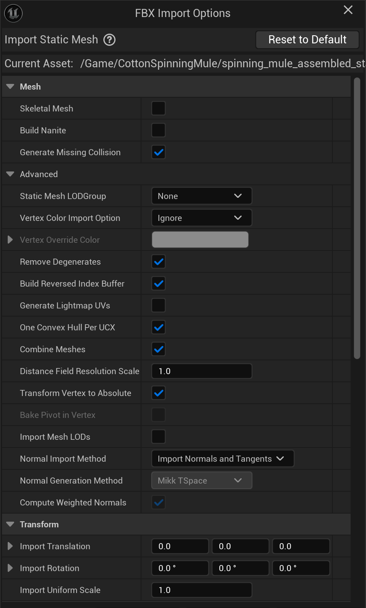
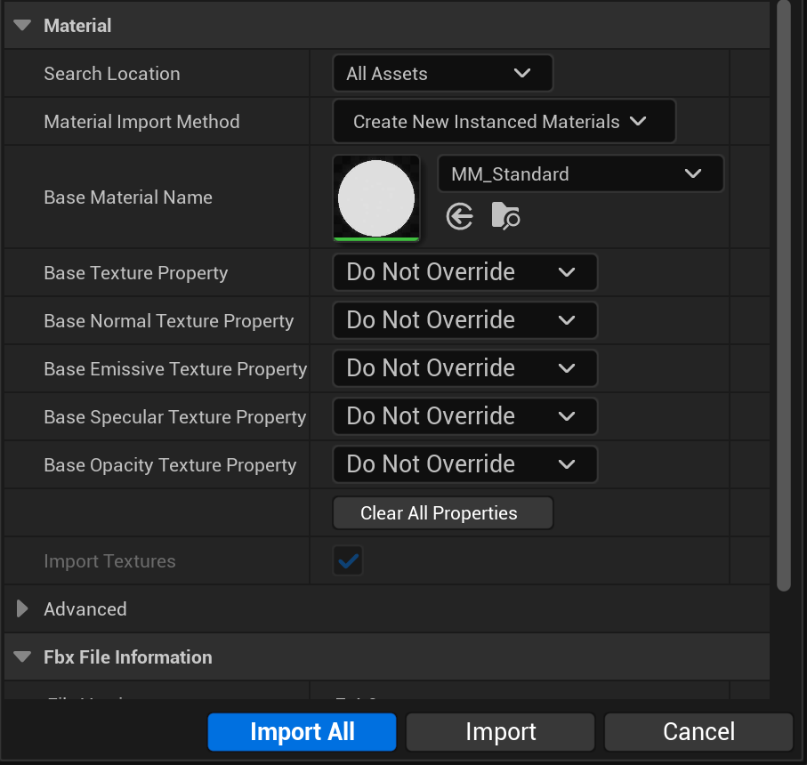

Unreal Guide
Simple Export ships with an FBX preset for Unreal. Select the correct preset
in Properties -> Output -> Simple Export -> Preset. The preset ensures that the following settings are configured
correctly.
Export to Unreal
Exporting static assets to Unity is straightforward and only requires 3 simple steps:
Step 1: Select the UE-Default Preset
Make sure the UE-default preset is selected
Step 2: Create an Export Collection
Create an export collection - that will now automatically apply the settings for Unity. This can be done by using the plus button in the Export List, right-clicking on the collection in the Outliner or right-clicking on the parent object in the 3D Viewport
Step 3: Move the Collection to the Origin
Select Move by Collection Center in the Pre Export Defaults to move the collection to the origin based on the collection offset. This is important for Unity, as it expects the pivot point of the mesh to be at the origin.
Step 4: Export the Collection
Export the collection from the Export List, the Outliner or by exporting all selected collections.
Import to Unreal
When importing the FBX file into Unreal Engine, make sure to adjust the import settings as follows:
 
The Simple Unreal Export Preset
General Settings
| Setting | Value | Notes |
|---|---|---|
| Path Mode | Strip Path |
Keeps only the name of references and discards the path. |
| Scale | 1.0 |
Global Scale |
| object_types | 'MESH', 'OTHER', EMPTY', 'ARMATURE' |
Mesh should be obvious, Other enables object types like curves and metaballs to generate high poly geometry and empties are enabled as they may also contain object information when using systems like the collection instancing. |
| Custom Properties | True |
Custom Properties can make the files slightly bigger but can be useful for passing on additional data in your pipeline. |
Transformation Settings
| Setting | Value | Notes |
|---|---|---|
| Apply Scaling | FBX Unit Scale |
Apply custom scaling to each object transformation, and units scaling to FBX scale. Offers the most consistent and reliable scaling. |
| Forward Axis | X Forward |
X Forward corralates with Unreals coordinate system. |
| Up Axis | Z Up |
Unreal uses Z-up for the Upward vector. |
| Apply Unit | ✅ Enabled |
Ensures proper world orientation |
| Use Space Transform | ❌ Disabled |
Use Space Transform, Apply global space transform to the object rotations. When disabled only the axis space is written to the file and all object transforms are left as-is. Use Space transform can make the export easier but has certain technical limitation especially when working with animated meshes and deep hiererchies. It is therefore disabled. |
| Apply Transform | ❌ Disabled |
Apply Transform, Bake space transform into object data, avoids getting unwanted rotations to objects when target space is not aligned with Blender’s space (WARNING! experimental option, use at own risk, known to be broken with armatures/animations) |
Shading Settings
| Setting | Value | Notes |
|---|---|---|
| Smoothing | Normals Only |
Smoothing, Export smoothing information (prefer ‘Normals Only’ option if your target importer understand split normals) which Unity does. |
| Apply Modifiers | ✅ Enabled |
Apply objects modifiers on export |
| Tangent Space | ❌ Disabled |
Unity uses by default the Mikktspace, the same Tangent space used by Blender. It is therefore not necessary to export the tangent space |
| Triangulate Faces | ❌ Disabled |
While it is generally recommended to triangulate meshes before export, doing it in the exporter does not maintain custom normals and can therefore cause completely broken and unpredictable results. |
Animation Related Settings
Furhter References and Resources:
- Blender Python API Documentation: FBX Exporter
- UE Documentation: FBX Static Mesh Pipeline
- UE Documentation: FBX Skeletal Mesh Pipeline
- UE Documentation: FBX Content Pipeline
- Blender for UE Documentation
- Blender for UE Documentation: Transforms